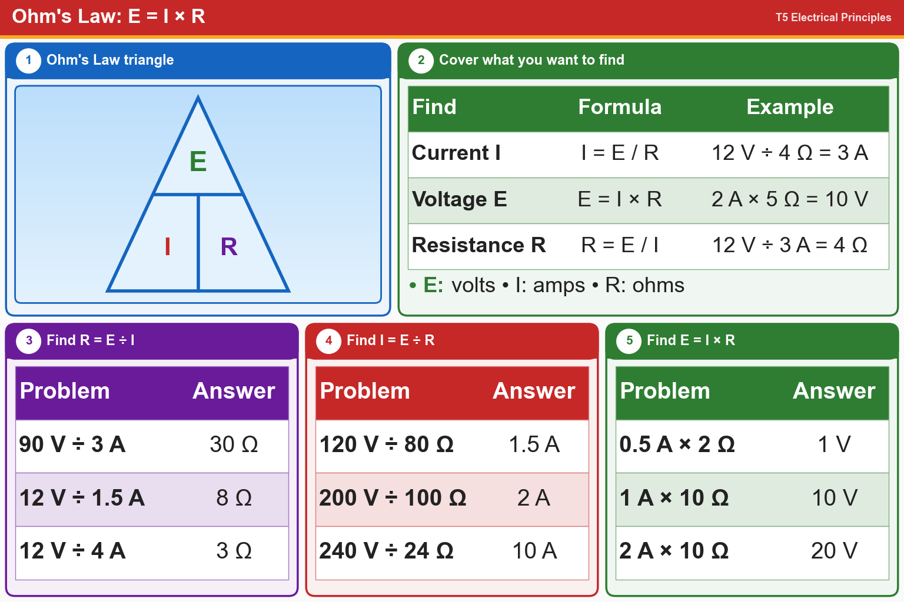

💡 R = E ÷ I, I = E ÷ R, E = I × R. Cover the letter you want in the triangle.
Pick an answer for each question, then press Grade at the bottom.
T5D01
What formula is used to calculate current in a circuit?
✔A.I = E / R
✘B.I = E2 / R
✘C.I = E x R
✘D.I = E2 x R
T5D02
What formula is used to calculate voltage in a circuit?
✘A.E = I / R
✔B.E = I x R
✘C.E = I2 x R
✘D.E = I2 / R
T5D03
What formula is used to calculate resistance in a circuit?
✘A.R = E + I
✘B.R = E - I
✘C.R = E x I
✔D.R = E / I
T5D04
What is the resistance of a circuit in which a current of 3 amperes flows when connected to 90 volts?
✘A.1/30 ohm
✘B.3 ohms
✘C.270 ohms
✔D.30 ohms
T5D05
What is the resistance of a circuit for which the applied voltage is 12 volts and the current flow is 1.5 amperes?
✘A.0.125 ohms
✘B.13.5 ohms
✘C.18 ohms
✔D.8 ohms
T5D06
What is the resistance of a circuit that draws 4 amperes from a 12-volt source?
✘A.48 ohms
✔B.3 ohms
✘C.16 ohms
✘D.8 ohms
T5D07
What is the current in a circuit with an applied voltage of 120 volts and a resistance of 80 ohms?
✔A.1.5 amperes
✘B.9600 amperes
✘C.0.667 amperes
✘D.200 amperes
T5D08
What is the current through a 100-ohm resistor connected across 200 volts?
✘A.20,000 amperes
✘B.0.5 amperes
✔C.2 amperes
✘D.100 amperes
T5D09
What is the current through a 24-ohm resistor connected across 240 volts?
✘A.0.1 amperes
✔B.10 amperes
✘C.5760 amperes
✘D.2400 amperes
T5D10
What is the voltage across a 2-ohm resistor if a current of 0.5 amperes flows through it?
✔A.1 volt
✘B.0.25 volts
✘C.1.5 volts
✘D.2.5 volts
T5D11
What is the voltage across a 10-ohm resistor if a current of 1 ampere flows through it?
✘A.9 volts
✘B.1 volt
✔C.10 volts
✘D.11 volts
T5D12
What is the voltage across a 10-ohm resistor if a current of 2 amperes flows through it?
✔A.20 volts
✘B.8 volts
✘C.0.2 volts
✘D.12 volts